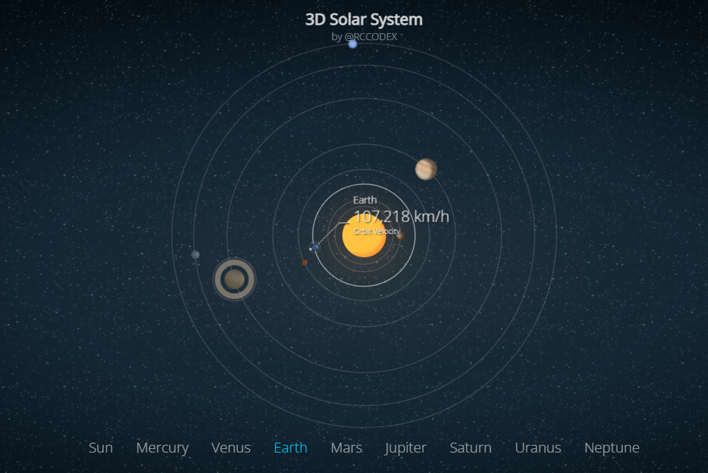
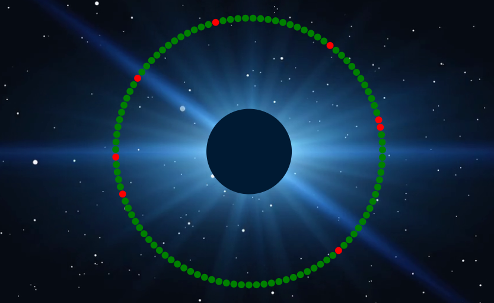

Introduction
In creating this Data-Driven Artwork, my objective was simple, to convey information about Near-Earth Objects (NEOs) or more precisely, asteroids near earth in an engaging and informative way. I wanted to combine data visualisation and interactivity to achieve that. This Data art blends in art and science to effectively represent the astronomical data I extracted from the NASA API. In this blog In this critical analysis and reflection I will discuss the representational strategies used in this Data artwork, how the art engages with the data, and I will also examine the ways in which the artwork aligns with the theoretical frameworks in data-driven art.
Artwork Concept and Goals
The primary goal of this artwork simply was to visually convey the way in which any day there can be an asteroid that crashes into earth, I wanted to show something like that, something that shows asteroids approaching earth at different speeds and different distances, those that are safe and those that are dangerous.
At first, I didn’t know how to tackle this project, I was clueless as to what type of artwork I wanted design for this type of data. Even now I still wonder if what I created falls into the category of an artwork. After surfing through the internet for so long I came across a certain type of art that I wanted to recreate. It is a 2D and 3D solar system and I wanted my artwork to resemble it. You can find it here: Solar System.
Figure 1 was what I initially wanted my Artwork to look like, however instead it was going to be asteroids orbiting the earth displaying their distances and whether they are potentially dangerous or not. Eventually I ended up with Figure 2 as my initial artwork. It’s not complete but this is to sum it up.
The aim in all this was to make this artwork captivating to the audience by using the NASA API to tell a story and the idea was that even data can be visually appealing and even communicate something.
Engagement with the Data
The approach used in this process involved having to use the NASA API to fetch NEO data and represent it visually as an artwork using D3.js., and it provided information about asteroids and their orbits near earth. This data was used to represent each asteroid as a colourful orb and try to simulate their orbits around earth. This approach had one aim and its to transform abstract data into a visually engaging experience.
Customization through User Input:
By allowing users to select their desired start and end dates for the data, this artwork provides a bit of personalized experience. and this approach aligns with the principles of user centered design, enabling users to interact with the data in a way that is meaningful to them.
Visual Representation:
The choice to represent Earth in a royal blue circle creates a clear focal point and provides a bit of spatial context. This aligns with data visualization practices where a well-defined reference point helps the viewers in understanding the data, giving the viewers also a sort of starting point.
Colour Coding:
One of the representational strategies was colour coding. Red was used to represent hazardous asteroids and green for safe asteroids. This colour choice enhanced the artwork’s ability to communicate the potential dangers that are present in our solar system. This simplifies the identification of each asteroid’s characteristic and follows the principles of visual communication design.
Dynamic Animation:
The animation of Asteroids orbiting around earth adds a bit of dynamic element to the artwork. What I mean is that it shows the natural movement of these celestial objects and also creates a sense of engagement. This aligns with the concept of dynamic data visualization, as it’s creating its own compelling narrative. The Zoom-In effect on the asteroids and earth also creates a certain level of engagement with the artwork, providing a deeper understanding of the art and data.
Tooltips for Additional Information:
The tooltips that appear when you hover on asteroids or the earth provide a detailed information about individual Asteroids, including their names, distances, and hazard status. This fits in with the concept of user-engagement and progressive disclosure, where users can access additional information as needed, instead of them receiving overwhelming data all at once.
In Summary
This artwork engages with the data from NASA by converting it into a more digestible visual data. enhancing it by providing more context and interactivity. The colour coding also helps in revealing just how much dangerous are these Near-earth objects, and what threat they pose to earth, in hopes that users will think more about that.
In terms of theory, the artwork draws principles of data visualization, user centered design, principles of effective communication and interactivity. It also reflects on the understanding that data driven art should not only inform but also engage with you and give you something to think about. Even though the artwork provides a clear representation of NEOs and their orbits, I feel like there is room for further developments, such as incorporating additional context and making the orbits more accurate.
As part of my design process, I researched data-driven art examples and principles, worked with the d3.js documentation, multiple academic readings about data visualization, user experience and interactions. And all of these resources and those I did not mention helped me design this artwork.
CONCLUSION
In conclusion, this Data driven artwork successfully communicates the NEO data visually and interactively. It also follows the principles of data visualization and user centered design, providing an engaging and educational experience, and a blend of art and data. it engages with users through colours, animation, and interactivity, showing how powerful art is.